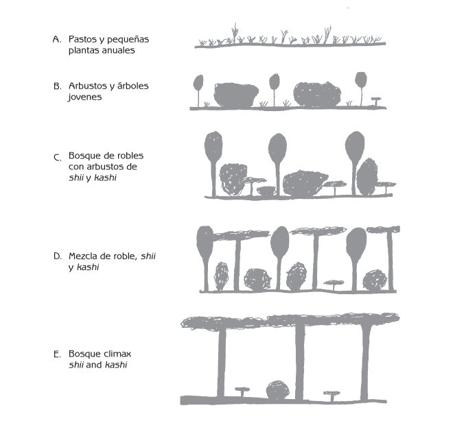
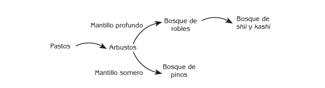
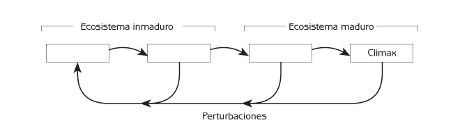
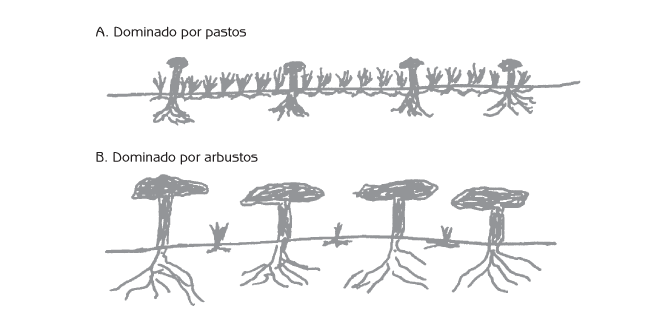
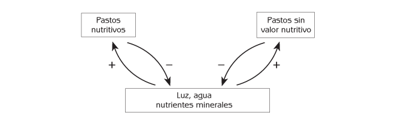
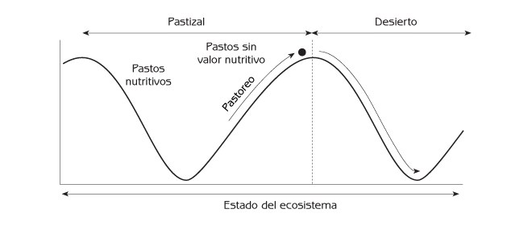
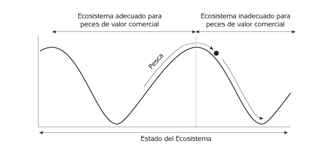
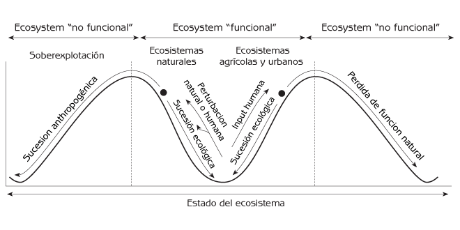
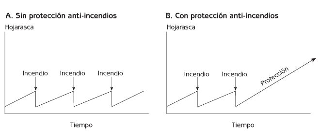
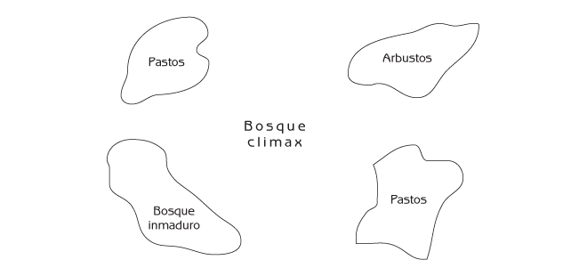

Ecología Humana: Conceptos Básicos para el Desarrollo Sustentable

Historias de éxito ambiental de todo el mundo con sus lecciones sobre cómo cambiar del deterioro a la restauración y la sustentabilidad.

Autor: Gerald G. Marten
Editorial: Earthscan Publications
Fecha de publicación: November 2001
Capitulo 6 - Sucesión Ecológica
Los procesos naturales cambian continuamente a los ecosistemas. Los cambios pueden tardar años, o incluso siglos, avanzando tan lentamente que apenas resultan perceptibles. Tienen un patrón sistemático generado por el ensamble comunitario, que sigue una progresión ordenada conocida como sucesión ecológica, otra de las propiedades emergentes de los ecosistemas.
Los ecosistemas se cambian a sí mismos, y las personas cambian los ecosistemas. Las personas modifican los ecosistemas para satisfacer sus necesidades. Los cambios intencionales generados por las personas pueden poner en movimiento cadenas de efectos que conducen a nuevos cambios – es decir, a una sucesión inducida por el hombre. Algunas veces, estos cambios no son intencionados. Pueden resultar indeseables o irreversibles. En este capítulo se darán tres ejemplos de sucesión inducida por el hombre:
- Sobrepastoreo y degradación de pastizales.
- Sobrepesca y substitución de peces de importancia comercial por peces chatarra.
- Incendios forestales severos cuando se protege a los bosques contra el fuego.
En virtud de que la sucesión ecológica puede tener consecuencias prácticas de mucha importancia, los seres humanos han respondido a ella desarrollando una gran variedad de formas para integrar su uso de los ecosistemas con los procesos naturales de sucesión. La sociedad moderna utiliza insumos intensivos para mantener los ecosistemas agrícolas y urbanos, en oposición a los procesos naturales de sucesión ecológica. Muchas sociedades tradicionales han recurrido a siglos de experimentación y experiencia para desarrollar estrategias que permitan aprovechar la sucesión ecológica de tal modo que les haga posible utilizar menos insumos. Este capítulo describirá ejemplos de manejo tradicional de bosques comunitarios y agricultura tradicional.
Sucesión Ecológica
¿Los lugares con las mismas condiciones físicas siempre tienen exactamente los mismos ecosistemas? La respuesta es ‘no’. En primer lugar, los elementos aleatorios del ensamble comunitario pueden conducir a ecosistemas diferentes. En segundo, los ecosistemas experimentan cambios lentos pero sistemáticos a medida que avanza el ensamble comunitario. Un sitio determinado tiene diferentes comunidades biológicas, y por tanto ecosistemas distintos, en tiempos distintos. La secuencia lenta pero ordenada de comunidades biológicas distintas en el mismo lugar es lo que se conoce como sucesión ecológica. Cada comunidad biológica constituye una etapa de la sucesión ecológica.
El cambio de una comunidad a otra se puede dar porque:
- Las pequeñas especies de plantas y animales generalmente crecen y se reproducen rápidamente. Las plantas y animales más grandes tardan más tiempo en crecer, y su crecimiento demográfico también es más lento. En consecuencia, las especies de plantas y animales que crecen más rápidamente son las primeras en poblar un sitio, y las más lentas las sustituyen posteriormente. Por ejemplo, si un incendio o tala destruye un bosque, unos cuantos meses después habrá muchas especies de pastos creciendo en ese lugar, porque los pastos crecen rápidamente. Más tarde, crecerán arbustos sobre los pastos, y después crecerán árboles por encima de los arbustos.
- Una comunidad biológica puede crear condiciones que conduzcan a su propia destrucción. Por ejemplo, a medida que los árboles envejecen, se debilitan y se hacen vulnerables a la destrucción ocasionada por insectos o enfermedades. Cuando esto sucede, una comunidad biológica ‘envejece’ y ‘muere’, y otra toma su lugar.
- Una comunidad biológica puede crear condiciones más adecuadas para otra comunidad biológica. Una comunidad biológica puede modificar las condiciones físicas o biológicas en un sitio, haciendo que resulte más favorable para el establecimiento de otra comunidad biológica, de manera que una comunidad biológica conduce a otra.
- Una comunidad biológica puede ser destruida por ‘perturbaciones’ naturales o generadas por el hombre, y sustituida por otra comunidad biológica. Los incendios, las tormentas y las inundaciones son ejemplos de perturbaciones naturales. Las actividades humanas tales como la tala o el aclareo para el establecimiento de ecosistemas agrícolas o urbanos también pueden destruir una comunidad biológica. Las actividades como la pesca excesiva o el sobrepastoreo pueden cambiar una comunidad biológica a tal grado que resulte sustituida por otra.
Las primeras etapas de la sucesión ecológica se conocen como ‘inmaduras’. Son más simples, con menos especies de plantas y animales. A medida que avanza el ensamble comunitario, la comunidad biológica se hace más compleja. Acumula más especies, muchas de ellas más especializadas en cuanto a su dieta y la forma en que interactúan con otras plantas y animales en la red alimenticia. La última etapa de la sucesión es la comunidad clímax. Las comunidades clímax no transitan por sí mismas a una nueva etapa. La sucesión ecológica es la progresión de comunidades biológicas inmaduras a la madurez y al estado clímax.
Un ejemplo de sucesión ecológica
La sucesión ecológica comienza de manera típica cuando la comunidad biológica existente es retirada mediante actividades humanas o debido a una perturbación natural como un incendio o una tormenta severa. Esto puede suceder en un área de gran tamaño, pero la sucesión también puede comenzar en el pequeño parche que queda abierto en el bosque cuando cae un árbol. En el oeste de Japón, las primeras etapas de la sucesión se caracterizan generalmente por la presencia de pastos cortos y pequeñas plantas con flores anuales (Figura 6.1A). Después de unos cuantos años, éstas pueden ser desplazadas por pastos más altos. Eventualmente crecen árboles jóvenes y arbustos entre el pasto, formando una capa lo suficientemente densa como para cubrir de sombra la mayor parte del pasto (Figura 6.1B). Al final, algunos de los árboles jóvenes crecen más altos que los arbustos y forman un bosque. Algunos de los arbustos desaparecen, mientras que otros sobreviven entre los árboles.
Si el suelo es profundo, el primer bosque es generalmente una mezcla de encinos deciduos con otros árboles y arbustos (Figura 6.1C). Los encinos y la mayoría de los demás árboles son eventualmente sustituidos por árboles de shii y kashi, que forman un bosque clímax (Figura 6.1E). (Shii y kashi son árboles latifoliados siempre verdes de la familia de las hayas). A medida que cambian las especies de plantas de una comunidad biológica, las especies de animales también cambian porque cada especie particular de animal utiliza especies particulares de plantas como alimento o refugio.
¿Por qué durante la sucesión ecológica aparece primero un bosque de encinos, y por qué eventualmente lo sustituyen los shii y kashi? Los shii y kashi crecen muy lentamente, pero viven durante cientos de años. Con el tiempo pueden crecer hasta alcanzar grandes alturas. Los encinos crecen rápidamente cuando tienen abundante luz solar, pero no crecen tan altos. Cuando crecen simultáneamente plántulas de shii, kashi y encino en un ecosistema inmaduro y abierto (Figura 6.1B), la abundancia de luz solar favorece a los encinos, que crecen más rápidamente que los shii y los kashi. El primer bosque en la sucesión ecológica es entonces el de encinos con arbustos y pequeños árboles de shii y kashi bajo su sombra (Figura 6.1C). Los shii y kashi pueden sobrevivir a la sombra de los árboles de encino, y poco a poco aumenta su altura. Después de alrededor de 50 años el bosque es una mezcla de encinos con shii y kashi, todos aproximadamente del mismo tamaño (Figura 6.1D). En ese momento, algunos de los árboles de encino son viejos y seniles, y pueden estar cubiertos por enredaderas que los ‘ahogan’. Los encinos empiezan a decaer.

Figura 6.1 Típica sucesión ecológica en suelos profundos del occidente Japonés.
Eventualmente, los shii y los kashi crecen por encima de los encinos para formar un denso dosel que arroja sombra sobre todo lo que queda debajo. Los encinos no pueden sobrevivir a la sombra de los shii y los kashi, de modo que la comunidad biológica se transforma en un bosque clímax de altos shii y kashi con algunos shii y kashi jóvenes y dispersos y arbustos tolerantes a la sombra debajo (Figura 6.1E). Toda la progresión, desde el ecosistema de pastos a bosque maduro de shii y kashi, se lleva a cabo en un intervalo de 150 años o más. Debido a que los árboles de shii y kashi más jóvenes crecen para ocupar el espacio que queda cuando cae un árbol viejo, el bosque clímax permanece aproximadamente en el mismo estado, a menos que sea destruido por la actividad humana, por un incendio, o alguna otra perturbación severa.

Figura 6.2 Sucesión ecológica en el occidente Japonés. Nota: Los sitios con suelos someros tienen una distinta sucesión de comunidades biológicas que los sitios con suelos más profundos.
La sucesión ecológica en los suelos someros del oeste de Japón es diferente de la sucesión en suelos profundos (Figura 6.2). Los encinos, shii y kashi requieren suelos profundos para crecer a gran estatura, pero los pinos crecen muy bien incluso en suelos someros, siempre y cuando tengan luz solar en abundancia. El ecosistema clímax en suelos someros es el bosque de pinos. Los pinos jóvenes también pueden prosperar en áreas abiertas y soleadas con suelos profundos, pero eventualmente otros árboles predominan en suelos profundos porque los pinos no pueden tolerar su sombra.
Es evidente entonces que un mosaico de paisaje contiene distintas comunidades biológicas en distintos lugares no solamente debido a la variación espacial de las condiciones físicas, sino también debido a la sucesión ecológica. Los sitios que tienen condiciones físicas similares tienen sucesiones ecológicas parecidas, pero los sitios con condiciones físicas similares pueden tener ecosistemas muy distintos entre sí porque se encuentran en momentos diferentes de la misma sucesión.
Debido a que las comunidades clímax permanecen aproximadamente en el mismo estado por muchos años, se podría esperar que en el oeste de Japón hubiese muchos bosques de shii y kashi. El paisaje regional estaba dominado por bosques clímax de shii y kashi en el pasado remoto, pero la gente taló la mayoría de los bosques de shii y kashi hace muchos siglos. Los shii y los kashi, incluso algunos árboles muy viejos y de gran tamaño, se encuentran dispersos por el paisaje actual, pero los bosques clímax de shii y kashi totalmente desarrollados son muy escasos. Permanecen algunos vestigios de los bosques clímax principalmente en arboledas sagradas alrededor de templos.
La sucesión ecológica como un ciclo de sistemas complejos
La sucesión ecológica es cíclica (ver Figura 6.3). Sigue las cuatro fases del ciclo de sistemas complejos que se describieron en el Capítulo 4: crecimiento, equilibrio, disolución y reorganización. Las comunidades biológicas inmaduras, tales como los pastizales y matorrales, son las etapas de crecimiento de la sucesión ecológica. Debido a que las comunidades inmaduras tienen relativamente pocas especies, las especies recién llegadas no enfrentan una competencia intensa por parte de las que ya se encontraban en la comunidad. La mayoría de las recién llegadas sobrevive al proceso de ensamble comunitario, y el número de especies de plantas y animales que hay en la comunidad crece rápidamente. Las especies más exitosas en los ecosistemas inmaduros son aquéllas que pueden crecer y reproducirse a gran velocidad cuando abundan recursos.

Figura 6.3 La sucesión ecológica como un ciclo de sistemas complejos.
Los ecosistemas maduran en la medida en que especies adicionales de plantas y animales se establecen a lo largo de los años, durante el proceso de ensamble comunitario. Cada vez se hace más difícil para las especies recién llegadas incorporarse al ecosistema maduro debido a que ya tiene un gran número de especies que ocupan todos los nichos ecológicos potenciales. Las especies recién llegadas sólo pueden sobrevivir en un ecosistema maduro si pueden superar en la competencia y desplazar a las especies que ya se encuentran ahí. Eventualmente, la comunidad biológica cambia muy poco. Esta es la comunidad clímax (equilibrio). Tiene el número más elevado de especies, y todas son competidoras eficientes, buenas para sobrevivir con recursos limitados. Un ecosistema clímax puede durar siglos, siempre y cuando no le resulten demasiado lesivas las perturbaciones externas tales como incendios o tormentas severas.
Sin embargo, tarde o temprano la comunidad clímax es destruida por algún tipo de perturbación. Esto es la disolución. La mayor parte de las especies de plantas y animales desaparece del sitio. Sigue entonces la fase de reorganización. Debido a que en este momento se encuentran vacíos muchos nichos, la competencia es muy ligera y la supervivencia resulta fácil para las especies recién llegadas si el sitio cuenta con las condiciones físicas adecuadas y la comunidad biológica ofrece con una fuente de alimento apropiada. La etapa de reorganización es un tiempo durante el cual la comunidad puede adquirir un grupo de plantas y animales, u otro muy distinto, dependiendo de qué especies llegan de manera aleatoria al lugar durante este período crítico. Entonces ocurre la sucesión ecológica de comunidades inmaduras a maduras (crecimiento) hasta que se presenta otra perturbación o se alcanza de nuevo una comunidad clímax.
Las perturbaciones que ocasionan que las comunidades maduras sean sustituidas por etapas tempraneras son de escalas variables. Como resultado, los mosaicos de paisaje tienen parches de muchas dimensiones distintas. Por ejemplo, puede caerle un rayo a un árbol del bosque. El árbol muere y se cae, abriendo un pequeño hueco en el bosque, que resulta ocupado por una especie tempranera. En el otro extremo un tifón severo, o un incendio, o una tala a gran escala, puede arrasar cientos de kilómetros cuadrados de bosques.
Interacción de la retroalimentación positiva y negativa en la sucesión ecológica
Esta sección examina la tensión entre la retroalimentación positiva y negativa en la sucesión ecológica. La retroalimentación negativa tiende a mantener los ecosistemas en el mismo estado (homeostasis del ecosistema), pero éstos cambian de una etapa a otra en la medida en que interviene la retroalimentación positiva.
Veamos una vez más la sucesión de un ecosistema de pastizal a una comunidad de arbustos, empezando por un ecosistema donde el suelo está alfombrado por pastos (ver Figura 6.4A). Puede haber arbustos, pero son jóvenes y se encuentran dispersos. El ecosistema puede quedarse así durante 5 a 10 años, o aún durante más tiempo, porque las plántulas de los arbustos crecen muy lentamente. Crecen lentamente porque las raíces de los pastos están localizadas en las capas superficiales del suelo, mientras que la mayor parte de las raíces de los arbustos se encuentra más abajo. Los pastos interceptan la mayor parte del agua de lluvia, antes de que alcance las raíces de los arbustos. Debido a que los pastos limitan el suministro de agua para las plántulas de los arbustos, mantienen la integridad del ecosistema como pastizal. En esta etapa interviene la retroalimentación negativa para mantener la comunidad biológica en el mismo estado.

Figura 6.4 Competencia entre arbustos y pastos por la luz del sol y el agua.
Sin embargo, después de algunos años, algunos de los árboles y arbustos que han estado creciendo lentamente, alcanzan por fin alturas que les permiten proyectar sombras sobre los pastos que se encuentran bajo ellos (ver Figura 6.4B). Entonces los pastos cuentan con menos luz solar para llevar a cabo la fotosíntesis, y su crecimiento se ve restringido. Esto tiene como resultado que haya más agua disponible para los arbustos, que crecen más rápidamente y proyectan aún más sombra sobre los pastos. Este proceso de retroalimentación positiva permite que los arbustos predominen. Ahora dominan el acceso al agua y la luz solar, y los pastos decaen dramáticamente.
Este ejemplo muestra de qué manera la retroalimentación negativa puede mantener a un ecosistema en una etapa de la sucesión ecológica hasta que hay un cambio de magnitud suficiente en alguna parte del ecosistema como para disparar un circuito de retroalimentación positiva, que modifica el estado del ecosistema llevándolo a una nueva etapa en la sucesión. Este ejemplo es aplicable a mucho más pastos, arbustos y árboles. El mismo tipo de interacciones entre retroalimentaciones positivas y negativas es responsable no sólo de la sucesión ecológica, sino también de buena parte del comportamiento de todos los sistemas complejos adaptativos. Los ecosistemas, los sistemas sociales y otros sistemas complejos adaptativos se mantienen más o menos en el mismo estado durante largos períodos debido a que predomina la retroalimentación negativa, hasta que un pequeño cambio dispara un poderoso circuito de retroalimentación positiva para cambiar rápidamente el sistema. Después, la retroalimentación negativa retoma el control para mantener al sistema en su nuevo estado.
Sucesión urbana
Los ecosistemas urbanos y sus sistemas sociales cambian de maneras similares a la sucesión ecológica. A medida que una ciudad crece, todos los barrios que se encuentran en ella experimentan cambios en su sistema social. Un barrio puede cambiar drásticamente a lo largo de un período de 25 a 100 años. Puede ser principalmente residencial durante un tiempo, y transformarse en comercial o industrial en otro. Los barrios experimentan crecimiento, vitalidad y progreso en ciertos períodos, y en otros se deterioran a medida que el punto focal del crecimiento y la vitalidad se desplaza a otros barrios. Lo mismo se puede decir acerca de ciudades enteras. Las ciudades crecen y decaen a medida que el punto focal del crecimiento y la vitalidad se desplaza de una ciudad a otra.
Sucesión Inducida por el Hombre
Las actividades humanas pueden tener un efecto poderoso sobre los ecosistemas y las formas en que éstos cambian. Esto se conoce como sucesión inducida por el hombre, y puede conducir a cambios frecuentemente inesperados y ocasionalmente muy dañinos a la utilidad que las personas obtienen de los ecosistemas. La contaminación de las lagunas que rodean las pequeñas islas del Pacífico Sur es un ejemplo impactante. Actualmente muchas comunidades del Pacífico Sur consumen alimentos enlatados y empacados de importación, y disponen de las latas vacías y otros residuos en basureros. El escurrimiento de agua pluvial por los basureros contamina las lagunas, reduciendo la cantidad de peces y otros alimentos de origen marino. Con menos alimentos provenientes del mar, las personas se ven obligadas a comprar más y más alimentos enlatados baratos, la contaminación empeora y la laguna sostiene menos peces. Este circuito de retroalimentación positiva cambia el ecosistema de la laguna y también deteriora la dieta de la gente.
Degradación de pastizales por sobrepastoreo
Otro ejemplo de sucesión inducida por el hombre es el efecto que tiene el sobrepastoreo en los ecosistemas de pastizal. El sobrepastoreo ocurre cuando en un ecosistema de pastizal se encuentran más animales que pacen, como ovejas o reses, de los que puede sostener su capacidad de carga para esos animales.
Generalmente, los pastizales tienen una mezcla de diferentes especies de pastos que difieren en sus valores nutricionales. Como defensa contra su consumo por animales, muchas especies de pastos no son nutritivas. Incluso algunas especies de pastos son venenosas. Dado que los animales que pacen saben qué pastos se pueden comer y cuáles no, seleccionan las especies nutritivas y dejan el resto sin comérselas. En el mismo pastizal compiten entre sí distintas especies de pastos para obtener nutrientes minerales del suelo (principalmente nitrógeno, fósforo y potasio), agua y luz solar (ver Figura 6.5). Una mezcla de diferentes especies de pastos puede convivir en el mismo ecosistema, siempre y cuando ninguna de las especies tenga alguna ventaja sobre las demás. Sin embargo, si algunas de las especies se encuentran en desventaja, desaparecerán, y las demás especies resultarán dominantes.

Figura 6.5 La competencia por luz, agua y minerales entre pastos nutritivos y no-nutritivos.
¿Qué sucede cuando demasiadas cabezas de ganado pastan por un período prolongado? Debido a que las reses seleccionan los pastos nutritivos, estas especies tienen una desventaja en su competencia con los pastos que no resultan nutritivos. Las poblaciones de pastos nutritivos disminuyen, dejando más recursos para que crezcan otras especies y se incremente su abundancia. Se pone en marcha un circuito de retroalimentación positiva para que los pastos que no son nutritivos sustituyan a los que sí lo son. Si se siguen las flechas a través del diagrama de la Figura 6.5 es posible observar que cada especie de pasto tiene un circuito de retroalimentación positiva que pasa primero por su ‘comida’ en el suelo y luego por las otras especies de pastos. Este proceso de sustitución se puede llevar años, pero una vez que termina, el pastizal ha pasado de ser un ecosistema con una mezcla de pastos, a un ecosistema dominado por pastos con un valor nutricional bajo. En consecuencia, la capacidad de carga para el ganado es mucho menor que antes.
Desertificación
En las regiones donde los ecosistemas maduros son bosques, los ecosistemas de pastos representan una etapa de sucesión temprana. Sin embargo, los pastizales son ecosistemas clímax en las regiones de praderas, donde la precipitación no es suficiente para sostener un bosque. Los desiertos son ecosistemas clímax donde no hay la precipitación suficiente ni siquiera para sostener un pastizal. La desertificación es el cambio de pastizal a desierto en una región donde el clima es adecuado para los pastizales. Hay suficiente precipitación para pastizales, pero el sobrepastoreo puede transformarlos en desiertos.
En un ecosistema de pastizal saludable, todo el suelo se encuentra cubierto por pastos, que lo protegen de la erosión ocasionada por el viento o la lluvia. Si hay demasiadas cabezas de ganado, se reduce la cobertura de los pastos. Poco a poco, el viento y la lluvia se llevan el mantillo fértil del suelo que ya no se encuentra protegido por los pastos. Cuando se pierde el mantillo, el suelo pierde su fertilidad y disminuye su capacidad para retener agua. Entonces los pastos crecen más lentamente y son sustituidos por arbustos cuyas raíces pueden alcanzar el agua en zonas más profundas del suelo. En vista de que los arbustos no son nutritivos para el ganado, disminuye la capacidad de carga para el ganado. Entonces la gente puede utilizar cabras en lugar de reses, porque las cabras se pueden alimentar de arbustos que no sirven de alimento para las reses. Las cabras también se pueden comer los pastos, que arrancan de raíz. Si hay demasiadas cabras, destruyen los pastos que quedan, y más suelo pierde su cubierta protectora. Hay una mayor erosión, y eventualmente el suelo se encuentra tan degradado que ya ningún pasto puede crecer en él. El pastizal se ha transformado en un desierto con arbustos dispersos (ver Figura 6.6).
Estos cambios son lentos. Pueden pasar 50 años o más antes de que un pastizal se convierta en un desierto que produce muy poco alimento para la gente. Todo el ecosistema cambia. Los arbustos del desierto sustituyen a los pastos, y el resto de la comunidad biológica cambia porque depende de las plantas. También cambian las condiciones físicas, con frecuencia de manera irreversible. Debido a que el suelo degradado no puede retener suficiente agua para sostener el crecimiento de pastos, un desierto puede no volver a ser un pastizal, aún si se retiran todos los animales que pacen.
A nivel mundial, cada año se transforman en desiertos alrededor de 50,000 kilómetros cuadrados de pastizales. Las causas son complejas y variadas, pero el sobrepastoreo suele ser uno de los principales factores. ¿Por qué la gente coloca demasiados animales que pacen en los pastizales cuando las consecuencias resultan tan desastrosas? La razón principal es la sobrepoblación humana. La población humana en muchas áreas de pastizales ya excede la capacidad de carga del ecosistema local. Las personas utilizan demasiados animales que pacen debido a que los necesitan para alimentarse ahora, aunque esto signifique que habrá menos alimentos en el futuro. La desertificación ha contribuido a las hambrunas en lugares tales como el Sahel Africano. Este es un ejemplo del exceso demográfico que puede ocasionar que la población humana y su ecosistema se colapsen simultáneamente.
Sucesión de pesquerías
La pesca comercial puede tener efectos de muy largo alcance sobre las poblaciones de peces de mares y lagos. Si los pescadores se concentran en pescar unas pocas especies de valor comercial elevado, estas especies tendrán tasas de mortalidad más altas que otras especies de peces con las que compiten para obtener recursos alimentarios. Las poblaciones de peces comercialmente valiosos decrecen y son sustituidas por peces chatarra o otros animales acuáticos de poco o ningún valor comercial. Esto se conoce como la sucesión de pesquerías. Es básicamente el mismo proceso ecológico que la sustitución de pastos nutritivos por especies que no lo son, debida al sobrepastoreo. Durante los años 40 y 50 del Siglo XX, la población de sardinas frente a las costas de California decayó y fue reemplazada por anchoas. Mientras que se reconoce que los ciclos climáticos y biológicos de largo plazo pueden haber jugado algún papel en esta historia, parece ser que el cambio se debió principalmente a la sobrepesca. De manera parecida, las sardinas sustituyeron a las anchovetas frente a las costas de Perú y Chile cuando hubo una intensa captura durante los años 60 y 70 del Siglo XX, y han ocurrido historias similares con otras especies de peces en los mares y lagos de todo el mundo.

Figura 6.6 Sucesión antropogénica de pastizal a desierto debida al sobrepastoreo.
Cuando esto sucede, una disminución en el tamaño de la población de una especie particular de pez puede desencadenar una serie de efectos a través del ecosistema acuático que alterará la comunidad biológica de muchas otras formas. A veces también cambian las condiciones físicas. Puede ser que los peces que desaparecieron no puedan regresar, aún después de que haya cesado la sobrepesca. Cuando la gente daña una parte de un ecosistema, éste se adapta transformándose en otro tipo de ecosistema – uno que puede no servir a las necesidades de la gente tan bien como antes. Una gran cantidad de cambios a través del ecosistema lo han ‘encausado’ a formar una nueva comunidad biológica (ver Figura 6.7).
El principio de ‘funcional/no funcional’ en la sucesión inducida por el hombre
La desertificación y la sucesión de pesquerías son ejemplos de una propiedad emergente de los ecosistemas que resulta más general. La sucesión inducida por el hombre puede hacer que los ecosistemas cambien de un dominio de estabilidad que sirve a las necesidades humanas (‘funcional’) a otro dominio de estabilidad que no lo hace (‘no funcional’).
Los ecosistemas continúan en un dominio ‘funcional’ en tanto que la gente no los cambie demasiado. Si un ecosistema se altera severamente, las fuerzas naturales y sociales lo pueden transformar aún más, hasta alcanzar un dominio de estabilidad que puede seguir “funcionando” en este sentido, pero que frecuentemente no lo es.

Figura 6.7 Desaparición de peces de valor comercial debido a la sobrepesca.
Los ecosistemas son impresionantemente resilientes en cuanto a su capacidad para continuar funcionando y proporcionando servicios dentro de cierto rango de usos, e incluso de abuso moderado. Los niveles moderados de pesca, pastoreo, tala, u otros tipos de uso pueden alterar el estado de un ecosistema natural, pero éste permanece dentro del mismo domino de estabilidad y continúa proporcionando peces, forraje, o madera (ver Figura 6.8). Lo mismo es cierto para los ecosistemas agrícolas y urbanos que incluyen dentro de sí a una comunidad biológica natural, tal como los animales y microorganismos que mantienen la fertilidad del suelo en una granja, o los árboles que retiran la contaminación del aire de una ciudad. Pero si un ecosistema cambia demasiado, puede desatarse una cadena de efectos a través de los ecosistemas y los sistemas sociales que alteren el ecosistema aún más. Pueden desaparecer los peces, el forraje, la fauna del suelo o los árboles urbanos. El estado del ecosistema pasa de un dominio de estabilidad a otro, y el nuevo ecosistema puede no resultar tan satisfactorio para las necesidades humanas como el anterior.
Gestionando la Sucesión
Manejo tradicional de bosques en Japón
La sucesión inducida por el hombre no siempre es dañina. Las personas que saben cómo interactuar con los ecosistemas de manera sustentable pueden provocar que los ecosistemas cambien – o dejen de cambiar – de maneras que mejor satisfagan sus necesidades. Pueden utilizar los procesos naturales para cambiar los ecosistemas hacia la etapa de la sucesión que desean. La gente también puede estructurar sus actividades en el ecosistema de tal manera que la comunidad biológica permanezca en la etapa de la sucesión deseada en lugar de desarrollarse hacia una etapa indeseada.

Figura 6.8 El principio ‘funcional/no funcional’ de sucesión antropogénica.
El sistema tradicional japonés satoyama (literalmente ‘pueblo/montaña’) es un ejemplo de manejo sustentable del paisaje que ha proporcionado los materiales esenciales para la vida comunitaria durante muchos siglos. Los residentes locales mantenían bosques jóvenes de encinos y parches de un pasto alto y perenne (susuki) como una parte importante de su paisaje porque les proporcionaban productos valiosos. Las fuertes y largas cañas del pasto susuki se utilizaban para techar las casas y como composta para los campos agrícolas. Los residentes evitaban que sus áreas de pasto susuki se transformaran en bosques prendiéndoles fuego después de cortar las cañas para utilizarlas. El fuego mataba los árboles y arbustos jóvenes, pero las raíces subterráneas del pasto sobrevivían para retoñar después de la quema.
Los bosques comunitarios eran la fuente principal de materiales de construcción, carbón para cocinar los alimentos y calentar los hogares, y hojarasca para preparar composta para los campos agrícolas. Los bosques de encino resultaban mucho más útiles que los bosques más maduros de shii y kashi, porque los encinos crecían más rápido. Los residentes empleaban un procedimiento muy sencillo para asegurarse de que contaran suficiente encinal para satisfacer todas sus necesidades. Cada año cortaban todos los encinos de un área pequeña, haciéndolo de tal modo que pudieran retoñar nuevos encinos de los tocones de los árboles talados. Debido a que los nuevos encinos podían hacer uso de los grandes sistemas de raíces de los árboles talados, podían crecer tan rápidamente que en un intervalo de 20 a 25 años ya se encontraban de nuevo listos para ser cortados. Una vez que se cortaban los árboles de 20 a 25 años de edad, se repetía el mismo procedimiento, y retoñaban nuevos árboles de los tocones; habría más encinos listos para ser cortados en otros 20 o 25 años. Ya que se cortaban diferentes partes del bosque durante períodos distintos, el paisaje presentaba un mosaico de bosques de encino de diferentes edades que proporcionaba una diversidad de productos forestales y un hábitat diverso para muchas especies de plantas, insectos, aves y otros animales.
Cada año, los residentes cortaban los árboles jóvenes de shii y kashi para que no pudieran crecer por encima de los encinos. De esta manera conservaban durante siglos el bosque de encino como la parte principal de su mosaico de paisaje. Era esencial cortar los encinos cada 20 o 25 años. Si se esperaban demasiado y no eliminaban los árboles de shii y kashi, los encinos serían eventualmente sustituidos por estas especies. Si los cortaban demasiado pronto, los encinos no podrían crecer lo suficiente como para producir las semillas necesarias para generarnuevos árboles. Sin árboles nuevos, el bosque de encino desaparecería eventualmente, y sería substituido por otras especies de árboles o por una etapa tempranera de la sucesión, con pastos y arbustos.
Hoy la situación es muy distinta. Durante los últimos 40 años, Japón ha importado petróleo y gas en lugar de utilizar carbón. Además, ha importado grandes cantidades de madera de otros países para la construcción, mientras tiende a utilizar menos madera de sus propios bosques. La mayoría de los agricultores aplica grandes cantidades de fertilizantes en sus campos, en lugar de usar la composta proveniente del bosque. Los bosques de encino ya no son talados de manera regular, los árboles se están haciendo seniles, y algunos empiezan a morir. Eventualmente, los bosques de encino podrán ser sustituidos por bosques de shii y kashi.
Protección contra incendios forestales
Los incendios – principalmente iniciados por relámpagos – son parte natural de muchos ecosistemas de bosque. Las semillas de algunas plantas únicamente pueden germinar cuando son estimuladas por el fuego. Las hojas muertas de los árboles se acumulan sobre el suelo para formar la hojarasca, que proporciona combustible para los incendios, usualmente iniciados por rayos. Cuando hay poca hojarasca no hay mucho combustible, los incendios arden lentamente y no generan demasiado calor. La mayor parte de la hojarasca se quema y algunas de las hojas de los árboles también se pueden quemar; sin embargo, pocos árboles mueren. Si el fuego mata algunos árboles (generalmente viejos), los huecos en el dosel son rápidamente llenados por el crecimiento de árboles jóvenes.
Los incendios cumplen una importante función en los bosques. Las hojas caídas contienen minerales, tales como fósforo y potasio, que las cenizas que quedan después de un incendio devuelven al suelo como nutrientes minerales para los árboles y las demás plantas del bosque. Pero si hay demasiada hojarasca sobre el suelo de un bosque, un incendio puede arder a temperaturas excesivamente elevadas porque las grandes cantidades de hojarasca le aportan combustible en abundancia. Un incendio donde hay mucha hojarasca se puede extender sobre una superficie muy grande y arder con tal intensidad que destruye todos los árboles, así como las semillas de árboles que se encuentran enterradas en el suelo. Cuando esto sucede, el bosque es destruido y surge de las cenizas un ecosistema de pastizal. Pueden pasar muchos años antes de que exista de nuevo un bosque, especialmente si ya no existen bosques cercanos que proporcionen una fuente de semillas.
Los incendios frecuentes son un mecanismo de retroalimentación negativa que evita la acumulación excesiva de hojarasca en los ecosistemas forestales (ver Figura 6.9A). En virtud de que los incendios frecuentes casi nunca generan daños dignos de consideración, resultan ser el mecanismo que tiene la naturaleza para proteger a los bosques de los incendios severos que podrían dañarles. Esto es la ‘homeostasis del ecosistema’. Un paisaje forestal con incendios frecuentes es un mosaico de bosques maduros y ecosistemas con pastos y arbustos, y bosques menos maduros en las áreas donde ha habido incendios recientemente (ver Figura 6.10). El tipo de ecosistema que se encuentra en cada parche depende del número de años que hayan transcurrido desde que ocurrió el último incendio, y de la severidad de éste. Generalmente, la gente considera que un paisaje diverso, salpicado de diferentes tipos de bosque y áreas abiertas, resulta más placentero que un bosque cerrado.

Figura 6.9 (A) Regulación natural de hojarasca por incendios (sin protección anti-incendios) y (B) la acumulación de hojarasca con protección anti-incendios.
Alrededor de 1900, la Oficina Forestal de los Estados Unidos de Norteamérica (United States Forest Service) emprendió la política de proteger a los bosques de los incendios porque los técnicos forestales no entendían la importancia de los incendios forestales frecuentes. No querían que ningún árbol resultara dañado por el fuego. Se dedicaron a apagar todos los incendios forestales lo más pronto posible durante 80 años. Cada vez se acumulaba más hojarasca sobre el suelo debido a la cantidad de tiempo que transcurría sin que hubiese pequeños incendios frecuentes que se deshicieran de la hojarasca (ver Figura 6.9B). En 1980 se había acumulado tanta hojarasca en los bosques, que éstos resultaban cada vez más susceptibles al fuego. Los nuevos incendios resultaron muy difíciles de controlar, especialmente en las grandes zonas áridas del oeste de los Estados Unidos de Norteamérica.
A medida que la agencia forestal trataba de proteger a los bosques de los incendios, el problema se hacía mayor porque resultaba más difícil extinguir cada incendio, que podía destruir grandes superficies de hábitat natural. La protección de los bosques se fue haciendo cada vez más cara porque se hizo necesario echar mano de un gran número de combatientes de incendios, vehículos terrestres, y aviones cisterna para arrojar agua. A pesar de estos esfuerzos, algunas veces un solo incendio era capaz de destruir miles de kilómetros cuadrados de bosques.

Figura 6.10 Mosaico paisajístico en la ausencia de protección anti-incendios.
Este ejemplo muestra cómo la interferencia humana con una parte natural de la ‘homeostasis del ecosistema’ hizo que los incendios se convirtieran en una perturbación capaz de destruir ecosistemas maduros, transformándolos en otros correspondientes a las etapas tempraneras de la sucesión (pastizales). La solución al problema es la quema controlada para deshacerse de la hojarasca y la tala selectiva para reducir el número de árboles que proporcionan combustible para los incendios. Esto es lo que la agencia forestal hace actualmente. Incluso una gran cantidad de hojarasca no arde a temperaturas elevadas si se encuentra húmeda, de manera que hay momentos (por ejemplo, después de que llueve) en los que los técnicos forestales pueden iniciar un incendio y quemar la hojarasca acumulada sin destruir los árboles. En vez de luchar contra la naturaleza, estas novedosas prácticas de manejo forestal trabajan en armonía con los circuitos de retroalimentación natural en los ecosistemas. Sin embargo, no ha resultado fácil corregir esta situación. Muchos bosques todavía tienen cantidades excesivas de combustible en los árboles en putrefacción, restos de vegetales, o arbustos, y el gobierno de los Estados Unidos de Norteamérica aún gasta muchos millones de dólares para combatir los incendios forestales destructivos. Además, a veces se pierde el control de las quemas controladas, resultando en la destrucción severa e incontrolada de los bosques, la pérdida de millones de dólares por daños a la propiedad, y una considerable polémica política.
El ejemplo de los incendios forestales muestra cómo puede ser contraintuitiva la respuesta de los ecosistemas a las actividades humanas – resulta contraria a lo que esperamos. Nuestras acciones pueden tener no solamente los efectos directos que pretendemos que tengan, sino que también pueden ocasionar una cadena de efectos a través de otras partes del ecosistema que responden de maneras inesperadas.
Sucesión ecológica y agricultura
Los ecosistemas agrícolas, como las granjas o los potreros, contienen muy pocas especies de plantas y animales en comparación con los ecosistemas naturales. La gente simplifica los ecosistemas agrícolas porque los ecosistemas más simples canalizan un mayor porcentaje de su producción biológica hacia el consumo humano. Los ecosistemas agrícolas son ecosistemas inmaduros, y como todos los ecosistemas inmaduros, están continuamente sujetos a los procesos naturales de la sucesión ecológica que los tienden a convertir en ecosistemas naturales maduros. Los campos son invadidos por malezas. Los insectos, y otros animales que se alimentan de las cosechas, se incorporan al ecosistema. La estrategia básica de la agricultura moderna consiste en contraponerse a estas fuerzas de la sucesión ecológica. La sociedad moderna utiliza insumos humanos intensos en forma de materiales, energía e información para evitar que la sucesión ecológica altere sus ecosistemas agrícolas.
Es típico que la agricultura tradicional siga una estrategia diferente. Reduce la necesidad de insumos intensivos armonizando la agricultura con los ciclos naturales de la sucesión ecológica. Por ejemplo, la agricultura de roza, tumba y quema o agricultura itinerante, es común en las áreas tropicales donde los suelos no son apropiados para la agricultura permanente. La roza, tumba y quema es particularmente útil en:
- laderas boscosas susceptibles a la erosión cuando se elimina un bosque para introducir agricultura;
- suelos forestales infértiles y vulnerables al lixiviado de nutrientes más allá del alcance de las raíces de los cultivos.
Un procedimiento común en este tipo de agricultura consiste en despejar un área del bosque cortando y quemando los árboles y los arbustos. El fuego es una herramienta que los agricultores de roza, tumba y quema emplean para hacer uso de una gran cantidad de energía natural para preparar sus campos para el cultivo. El fuego convierte los árboles y los arbustos en cenizas que sirven como un fertilizante natural, y además mata las plagas que se encuentran en el suelo. La ceniza proporciona una alcalinización natural para asegurar un pH adecuado para los cultivos. Un agricultor puede establecer un cultivo en el área clareada durante uno o dos años. Después de eso, la fertilidad del suelo disminuye y las plagas de los cultivos incrementan, de manera que las cosechas se vuelven demasiado pequeñas como para justificar el esfuerzo. El agricultor abandona ese parche antes de que surjan estos problemas, mudándose a otra parte del bosque donde prepara otro parche para el cultivo. El parche abandonado se deja en barbecho durante por lo menos diez años.
Una vez que se deja un parche en barbecho, lo invade una gran cantidad de plantas y animales del bosque circundante, generando una secuencia de comunidades biológicas que sigue la progresión usual de la sucesión ecológica, de pastos y arbustos, hasta árboles. La vegetación natural y la hojarasca protegen al suelo contra la erosión. Eventualmente, se recupera la fertilidad de la capa superficial del suelo mediante la bomba de nutrientes del bosque, en la medida en que los árboles con raíces profundas llevan los nutrientes hasta sus hojas, que después caen al suelo. Las plagas de los cultivos desaparecen porque no pueden sobrevivir en un ecosistema natural, sin los cultivos que les sirven de alimento. El agricultor podrá volver a ese lugar después de unos diez años de barbecho, repitiendo el proceso de roza, tumba y quema, y sembrando un cultivo. Un paisaje de agricultura trashumante tiene un mosaico de parches, algunos de ellos campos agrícolas con cultivos, pero la mayoría con diferentes etapas de sucesión en el curso del barbecho del bosque.
La agricultura de roza, tumba y quema es una forma altamente eficiente y ecológicamente sustentable de utilización de suelos frágiles cuando la población humana es lo suficientemente pequeña como para permitir que los agricultores dejen los terrenos en barbecho durante el tiempo requerido. Por desgracia, la roza, tumba y quema no puede funcionar cuando la población es demasiado grande. Cuando los terrenos son escasos, los agricultores se ven obligados a talar el bosque y sembrar sus cultivos antes de que el barbecho haya tenido el tiempo suficiente para que la tierra se recupere por completo. La consecuencia es un círculo vicioso de degradación del suelo y disminución de las cosechas. La explosión demográfica en el mundo en vías de desarrollo ha transformado a la agricultura de roza, tumba y quema de muchos lugares de ser una práctica ecológicamente sustentable a una que no lo es. Una solución a este problema es la agroforestería (o agrosilvicultura), que combina los cultivos de arbustos o árboles, como el café o frutales, con cultivos alimentarios convencionales, creando un ecosistema agrícola que emula un ecosistema forestal natural.
La población humana de Java, en Indonesia, es demasiado grande para sostener una agricultura de roza, tumba y quema con un barbecho forestal natural. La mayoría de los agricultores de Java es bastante pobre, porque debe satisfacer todas las necesidades de sus familias con únicamente una o dos hectáreas de tierra, pero saca el mayor provecho posible de esta situación mediante una agricultura tradicional que simula el ciclo natural de la sucesión ecológica. Comienzan por sembrar un policultivo de especies tales como camotes (o boniatos), frijoles, maíz, y varias docenas más de otras plantas alimenticias que crecen rápidamente. En el mismo terreno siembran de manera dispersa plantas de bambú o árboles. Los cultivos de crecimiento rápido dominan durante los primeros años (el ecosistema agrícola kebun de la Figura 6.11), y después se imponen los árboles o el bambú (el talun de la Figura 6.11). Tan pronto como los árboles y el bambú son lo suficientemente grandes, los agricultores los cosechan para utilizarlos como materiales de construcción y combustible, limpian el terreno, queman los materiales vegetales no utilizados, y una vez más siembran un policultivo de plantas alimenticias y árboles. Buena parte del paisaje de Java parece bosque natural pero es, de hecho, un sistema agroforestal cuidadosamente cultivado – etapas ‘forestales’ de un ciclo agrícola que aprovecha totalmente la sucesión ecológica. Cada familia maneja un pequeño mosaico de paisaje en diferentes etapas del ciclo, de manera que cuentan con un suministro continuo de los diversos alimentos y demás materiales que requieren.

Figura 6.11 Sucesión de policultivos en Java de uno dominado por cultivos de plantas anuales a uno dominado por cultivos arbóreos. Fuente: Christanty, L., Abdoellah, O., Marten, G. y Iskandar, J. (1986) “Tradicional agroforestry in West Java: the pekerangan (homegarden) and kebun-talun (annual-perennial rotation) cropping systems” in Marten, G., Traditional Agriculture in Southeast Asia: A Human Ecology Perspective, Westview, Boulder, Colorado.
Puntos de Reflexión
- ¿Cuáles son las secuencias típicas de la sucesión natural en la región donde vive (como en las Figuras 6.1 y 6.2)? ¿Los lugares con condiciones físicas distintas tienen secuencias diferentes? ¿Qué papel parece tener el azar en las secuencias que ocurren en realidad?
- ¿Ha habido ejemplos de sucesión inducida por el hombre en la región donde vive? ¿Qué actividades humanas los desencadenaron? ¿Fueron reversibles?
- Hable con sus abuelos u otros parientes o amigos que hayan vivido cerca de su hogar familiar durante mucho tiempo. ¿Cómo han cambiado los ecosistemas naturales, agrícolas y urbanos? Elabore un mapa que muestre cómo era el mosaico de paisajes en un radio de un kilómetro alrededor de su hogar familiar hace 50 años. Compare el mapa de hace 50 años con el mapa elaborado en el apartado de ‘Cosas en qué pensar’ del Capítulo 5 (esto es, un mapa del estado actual de los ecosistemas). ¿Cómo ha cambiado el mosaico de paisajes durante los últimos 50 años? (si hace 50 años no había viviendas en el área que habita, haga el mapa para un período más reciente, como de 30 o 40 años). De ser posible, elabore una serie de mapas que muestre los cambios sucesivos del mosaico de paisajes a lo largo del tiempo.